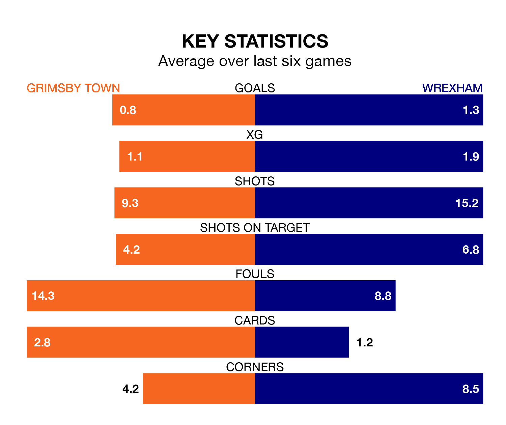

Wrexham travel to Blundell Park for Saturday's match against Grimsby Town looking to bounce back from defeat last time out in EFL League Two.
The Dragons, who sit third in the league after 38 games, fell to a 1-0 home defeat to Tranmere Rovers on March 16.
They face a Grimsby side who secured a draw in their last match, a 1-1 tie with Gillingham, and who sit 21st in the table.
With 67 goals in 38 games so far this season, Wrexham are scoring more than average in the league with 1.8 goals per game. And they are conceding fewer than average, letting in 47 goals at a rate of 1.2 per game.
Grimsby, meanwhile, are below average scorers, with 1.3 goals per game, compared to a league average of 1.5. They have conceded 1.7 goals per game.
In the last 10 years, Grimsby and Wrexham have played each other on nine occasions. Grimsby won five of them, Wrexham three, and they drew once.
On average, the Mariners scored 1.2 goals and the Dragons 1.1 in those matches.
Their last meeting was on September 16, when Wrexham won 3-0 at home.
In Arthur Okonkwo, the Dragons can rely on one of the league's safest pair of hands. He has kept 11 clean sheets in his 28 appearances this season in EFL League Two.
In Town's net, Harvey Cartwright has five clean sheets in 22 games. He has conceded a goal every 57 minutes, 80% more often than the 103 minutes between goals for Okonkwo.
The Mariners are in mixed form in EFL League Two, with two wins and four draws from their last six games.
With two wins and two draws over that period, the visitors' form is slightly worse – they have taken eight points from 18, compared to the home side's 10.
Saturday's match will be refereed by Oliver Yates, who has taken charge of 13 EFL League Two games so far this season, issuing five red cards and booking 61 players. He has awarded five penalties.
The last Grimsby game Yates refereed was a 2-0 away loss to Mansfield Town on December 26. His last Wrexham match was their 2-1 win at home against Colchester United on December 16.
Updated: 10:19 (UTC), 22/03/24